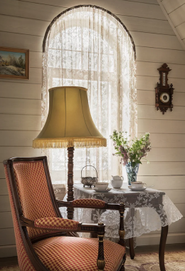
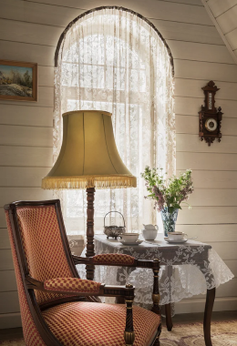
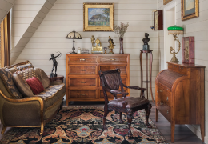

Проект гостевого загородного дома в стиле Тюдор, МО, 2019г.
обратился заказчик с просьбой спроектировать гостевой загородный дом
обратился заказчик с просьбой спроектировать гостевой загородный дом
обратился заказчик с просьбой спроектировать гостевой загородный дом
обратился заказчик с просьбой спроектировать гостевой загородный дом
обратился заказчик с просьбой спроектировать гостевой загородный дом
 

• Акцент делался на том, что должен быть большой гараж 100 м², отдельные помещения для обслуживающего персонала на первом этаже, а гостевые спальни и гостиная с кухней на мансарде
• Дом предполагалось строить на месте маленького дома, в котором проживал работник заказчика. Он так давно уже помогает на участке, что стал практически членом семьи
• Поэтому в самом начале стройки мои заказчики все время говорили, что строят дом для него. Однако это продолжалось не долго. Ровно до того момента, когда они поняли, что у нас стало получаться
• Место стройки – это старый дачный подмосковный поселок с историей
Холл
Дом условно разделен на две части - общую и гостевую этажами. Так на мансарде располагаются спальни, гостиная, кухня, столовая, ванные комнаты, гардеробные. На первом этаже гостевой санузел, прихожая, гараж, техпомещения и помещения персонала. Прямо из прихожей первого этажа по лестнице можно попасть в холл мансарды из которого можно пройти в жилые комнаты
Для консультации мы приглашали арбориста, чтобы четко очертить границы стройки. Отсюда и г-образная конфигурация дома. Дуб оказался во внутреннем дворе, напротив центрального входа в дом
Наличие дуба на участке так же повлияло и на стилистику дома. Я бы назвала его подмосковный Тюдор. Дома в таком стиле еще не распространены в нашем регионе. Хотя в этом историчесом стиле много строили и строят в Северной Америке, тилизуя постройки под дома старой Англии. Рядом с будущим домом растёт двухсотлетний дуб, который нужно было сохранить